本物の衛星画像で、地面の色を確かめる
ユーザー案(2026-11-17)「岩石の岩の色、緑の色、雪、都市などを、本物の世界地図の衛星画像を元にどう見えるか検証し、そのデフォルメをしたらどうか」の試験です。NASAのブルーマーブル(雲を除いた世界の衛星画像。1画素が約7km)から地域を切り出し、実際の色を取り出しました。右は、その色を5色に絞って簡略化したものです。
- 緑は想像より暗い: 熱帯雨林・タイガ・温帯の森は、ほぼ黒に近い深緑(#152208〜#2e3b18)です。地図でよく見る明るい緑とは別物です。
- 砂漠は砂色と赤茶: サハラは明るい砂色(#c4a378付近)に、岩の暗い斑点。オーストラリアの内陸は赤茶(#6e4d2d付近)です。
- 高い山は一色ではない: ヒマラヤ・チベットは、砂色、くすんだオリーブ、深緑、白い雪の稜線が混ざります。雪は山の尾根に細く現れます。
- 氷と雪は白、ただし純白ではない: グリーンランドは約84%が真っ白(#fbfcfc)、残りは灰色です。
- 都市は見えません: この大きさ(1画素=約7km)では、ヨーロッパでも都市は画像に現れません。都市は、地図では記号で示す対象です。
サハラ(砂漠)
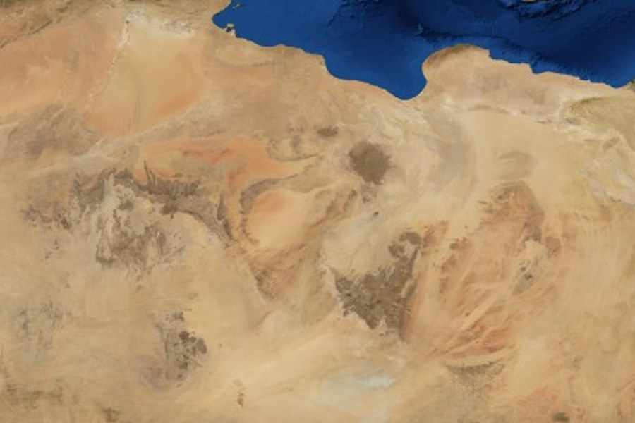
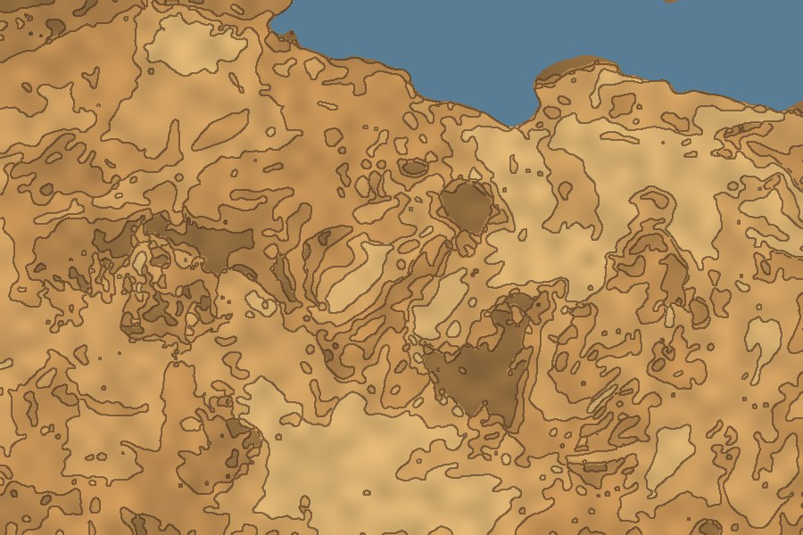
実際の色(多い順): 34.4%29.6%18.8%12.3%4.9%
アマゾン(熱帯雨林)
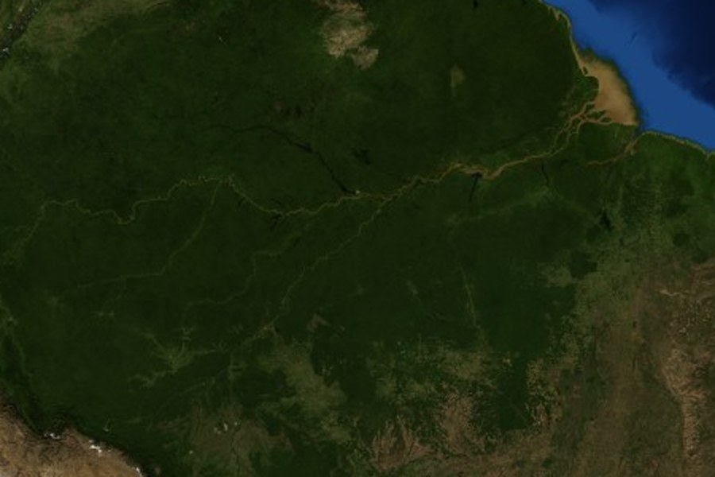
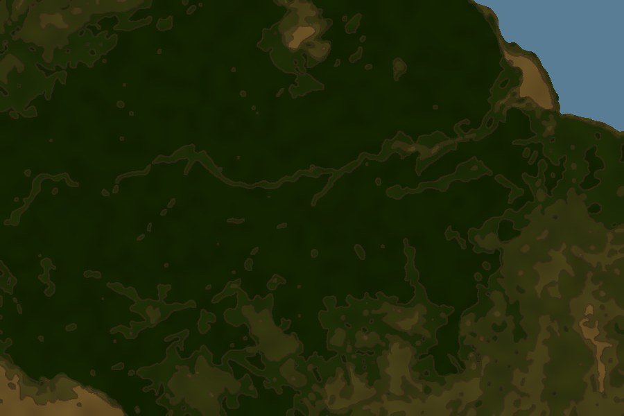
実際の色(多い順): 61.0%16.9%13.0%7.0%2.1%
シベリア(タイガ)
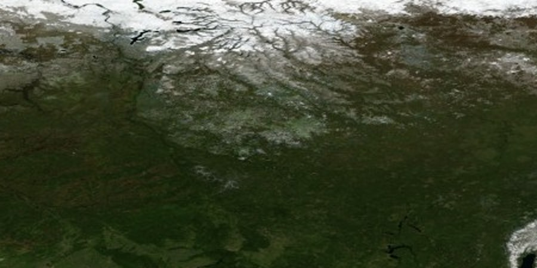
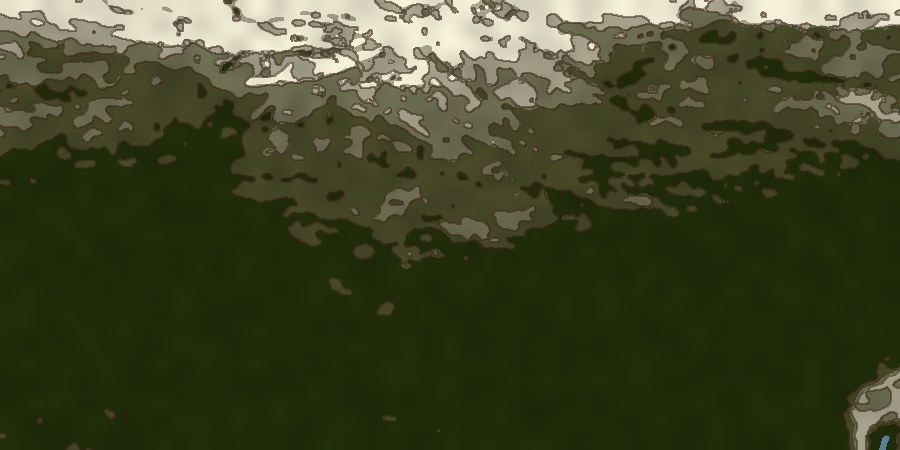
実際の色(多い順): 60.5%17.5%9.8%6.9%5.3%
チベット・ヒマラヤ(高い山)
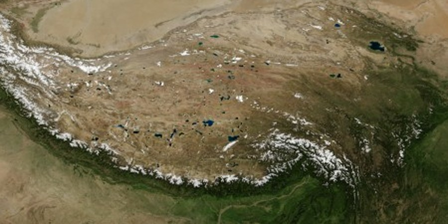
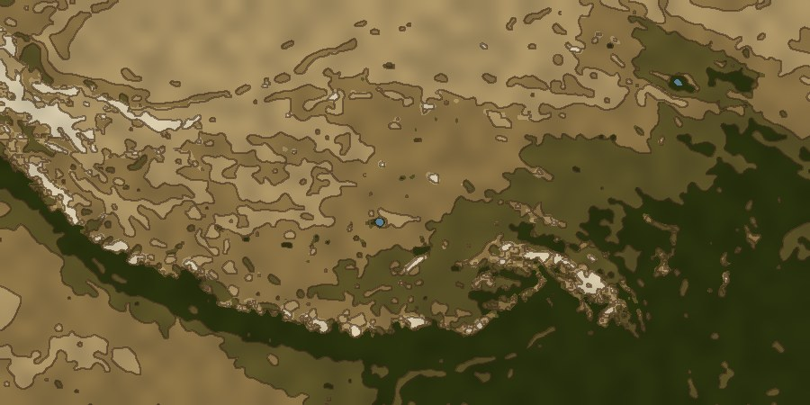
実際の色(多い順): 29.0%26.5%23.2%18.2%3.0%
グリーンランド(氷)
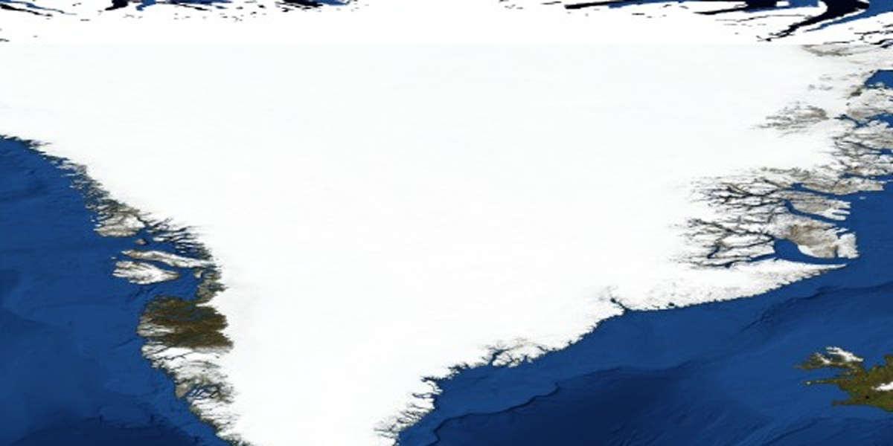
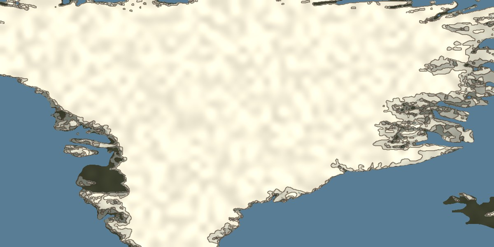
実際の色(多い順): 84.0%5.6%4.3%3.2%2.8%
アメリカ大平原(草原・耕作地)
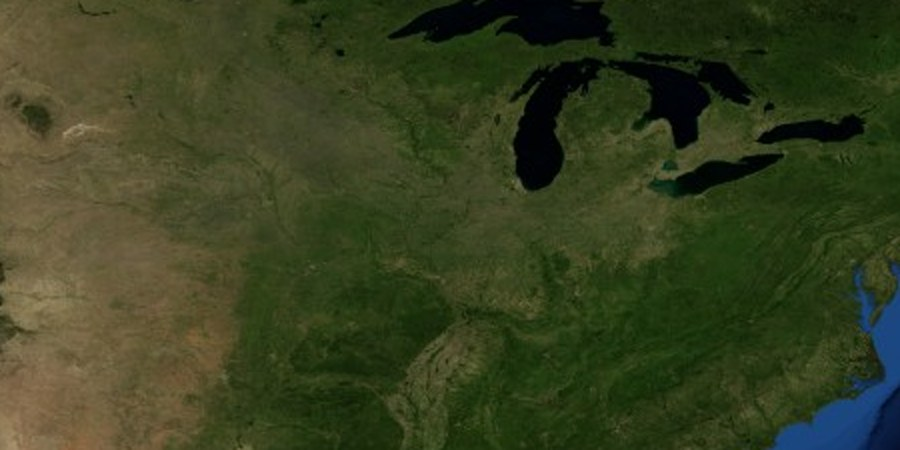
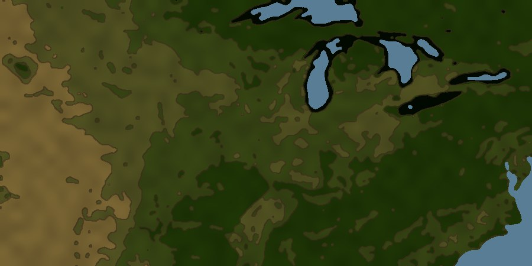
実際の色(多い順): 34.4%27.0%20.7%14.8%3.1%
ヨーロッパ(温帯・都市が多い)
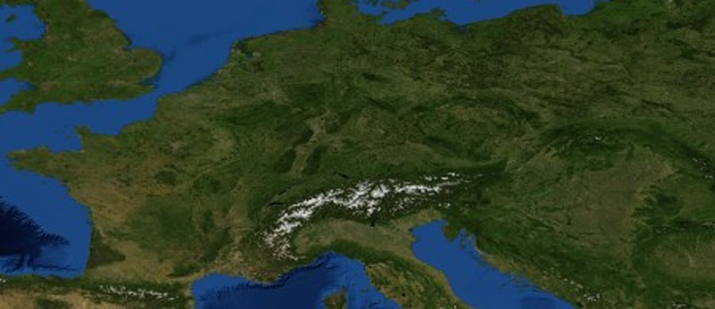
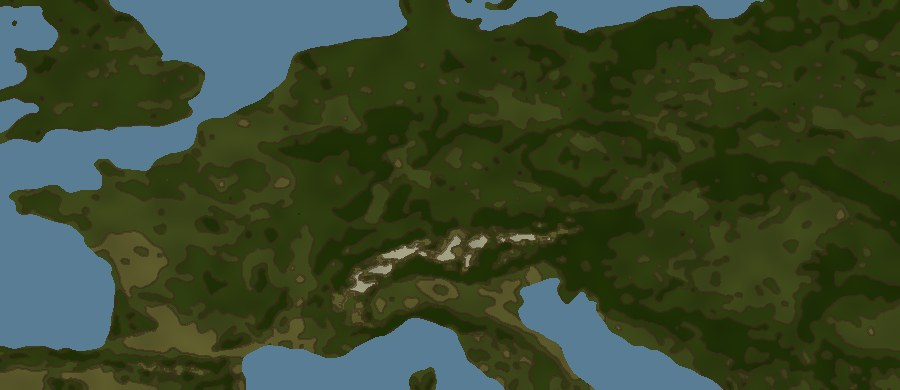
実際の色(多い順): 40.5%26.6%25.8%6.3%0.7%
オーストラリア内陸(赤い砂漠・サバンナ)
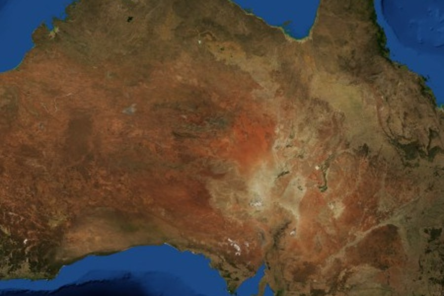
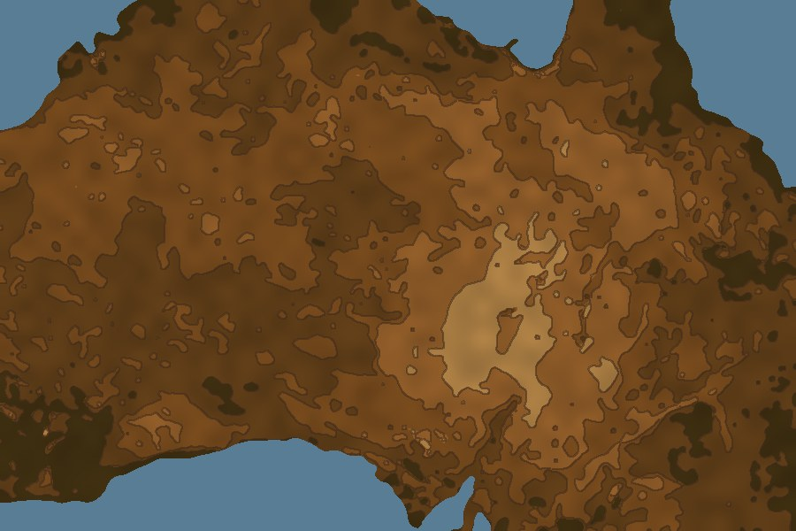
実際の色(多い順): 35.8%33.3%16.3%10.3%4.2%
カナダ北部(ツンドラ)
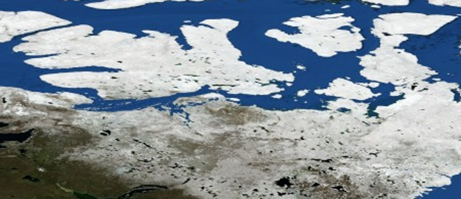
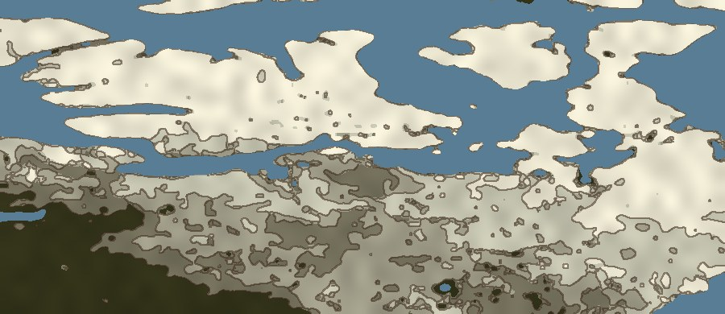
実際の色(多い順): 37.8%19.2%18.9%12.1%12.0%
この試験の限界
- 色は「色の集まり」を自動で5つに分けたものです。「岩」「草」などの名前は、私が画像を見て付けたもので、土地の種類のデータとは対応させていません。
- 簡略化は第1案です。色の絞り方は単純で、全体にくすんで見えます。ファンタジー用の彩度や色の調整は、これから詰める部分です。
- 画像は季節の合成なので、冬の雪の広がりは入っていません。
出典: NASA Blue Marble(Pythonパッケージ basemap-data に同梱された画像)。